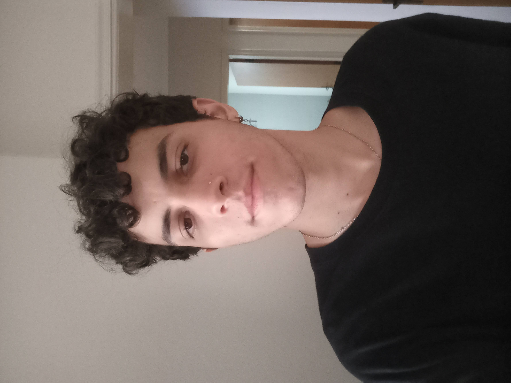

A Computer Science student and art enthusiast at University of São Paulo (USP).
The things i like to do in my free time range from playing games to practicing sports and other activities. I'm also into creative thinking and areas related to it. I like the idea of putting my vision into something that other people will come to know and use.
If you feel like reaching out you can send me an email at guilherme.v.c@usp.br or visit my social media.
